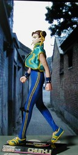
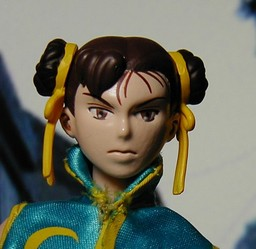

MOBY DICK ドルギア 春麗 (ZERO3 Ver.)

横
顔のアップ MOBY DICK のドルギア CAPCOM QUEENS CHUN-LI (ZERO3 Ver.) です。私は春麗は zero シリーズの衣装のほうが好きなのですが、ストII やストIII タイプの春麗のほうが巷では人気らしく、あまり種類がありません。その少ない種類の中から、もっともマシなものを選んだのが、これです。結構大きくて 18cm ぐらいの高さです。 普通のフィギュアと違い、針金のような骨格に樹脂が付いたような素材で、いろいろポーズが付けられる……といいたいところなのですが、曲がる関節が限られており、正直、見栄えのするポーズをとらせることが難しいです。また、重心が変わりやすく、右足のくるぶしには針金が入っていないので、立てるのも一苦労です。 ちなみに、上着は元の両面テープをはずし、一番上を糸で止めています。 例のごとく背景は勝手に使ってます。今回は CG ではなく写真です。 http://home.hiroshima-u.ac.jp/cato/ のもので、Google のイメージ検索で「北京」を調べたところ出てきました。 更新：06/02/04 初公開：2006年02月04日 03:16:59 Links: CAPCOM QUEENS: http://www.mobydick.co.jp/cq_zero3/ 背景: http://home.hiroshima-u.ac.jp/cato/kg_hutong.GIF